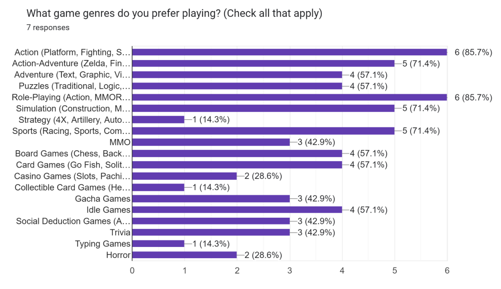

Explanation of Survey
A survey was done on a small scale, to receive a general idea of how gamers feel about gaming as an international collaboration. Do they learn from it? Do they encourage it? The age range responded was between 20-30 years old. They started gaming while young (some children, some teenagers). The responders also play often. When they answered the survey, most have last played online/internationally the day before. Those who play with other players have little to say negatively about people they have met. They consider those they met through games as friends or acquaintances. They believe that children should start approaching online gaming when they are more aware of themselves as individuals and starting social interactions. There have been positive experiences (learning, making friends, having fun) and negative experiences (bullied, isolated, frustration with people met or the game itself). However, even with negative experiences, most of the responders will consider games to have made a positive impact on their lives overall, whether personality, security, or learning. Finally, they have learned a lot about other cultures and countries through gaming, and have also learned to be cautious, understanding hate or dislike and how influential it can be, as well as love and interest.
Pie Charts, Graphs, Etc.
Below is the data we recieved from our survey.
